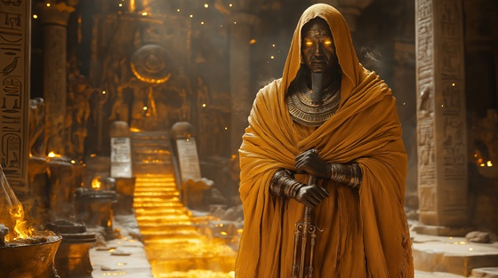

Lay your foundations in fire and stone with “Forged in Eternity”, a metallic, industrial anthem for Ptah, the creator god of ancient Egypt, patron of artisans, and architect of gods and kings. In his breath, the world takes shape. In his silence, form begins.
Who is Ptah?
Ptah is the Memphite god of creation, a cosmic craftsman who brings ideas into physical reality. In myth, he conceived the world in his heart, spoke it with his tongue, and willed it into form. He is the patron of blacksmiths, builders, architects, and creators of all kinds.
Worshipped in Memphis, he was often depicted as a mummified man with a skullcap, holding a was-scepter, djed pillar, and ankh, symbols of power, stability, and life. He formed not just physical matter — he forged cosmic order itself.
Ptah: Forged in Eternity
From thought to stone, from breath to form
I speak, and mountains are reborn
No hammer strikes unless I will
No temple stands without my skill
My words are blueprints wrapped in flame
Each god, each throne, I help proclaim
In silence deep, I shape the clay
The world begins when I obey
I do not war, I do not pray
I build the gods their worlds to stay
I am Ptah — the maker's hand
The voice that shapes both sea and land
In sacred forge, my craft is law
From chaos carved, I form Ma’at’s awe
I build the sky, I lay the stone
I craft the stars and shape the throne
They call me still, they know me not
Yet all things wear the marks I’ve wrought
The tools of time, the lines of fate
Are drawn by me, articulate
In Memphis halls, I carved the light
And whispered form to formless night
My heart, my tongue, the sacred code
Where thought became the world bestowed
I do not war, I do not pray
I build the gods their worlds to stay
I am Ptah — the maker's hand
The voice that shapes both sea and land
In sacred forge, my craft is law
From chaos carved, I form Ma’at’s awe
I build the sky, I lay the stone
I craft the stars and shape the throne
The chisel sings, the steel replies
In every art, my spirit lies
The breath of Ra, the crown of kings
Were built by what my forging brings
Though none may hear, they walk within
The world of wonders I begin
For in the walls, the flame, the form
I am the stillness and the storm
I do not war, I do not pray
I build the gods their worlds to stay
I am Ptah — the maker's hand
The voice that shapes both sea and land
In sacred forge, my craft is law
From chaos carved, I form Ma’at’s awe
I build the sky, I lay the stone
I craft the stars and shape the throne
Let others strike and others slay
I form the rules they must obey
In forge of soul and voice and flame
I gave the gods their ancient name
So speak the thought, and I will mold
The ageless form from dreams untold
I am Ptah — in dusk, in dawn
The hands through which the world is drawn